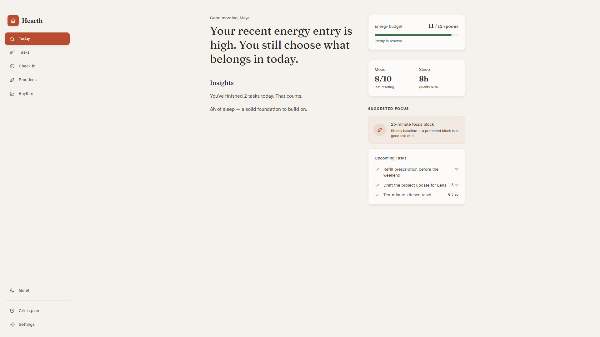
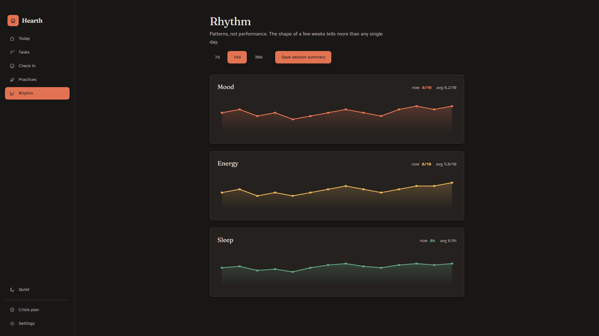
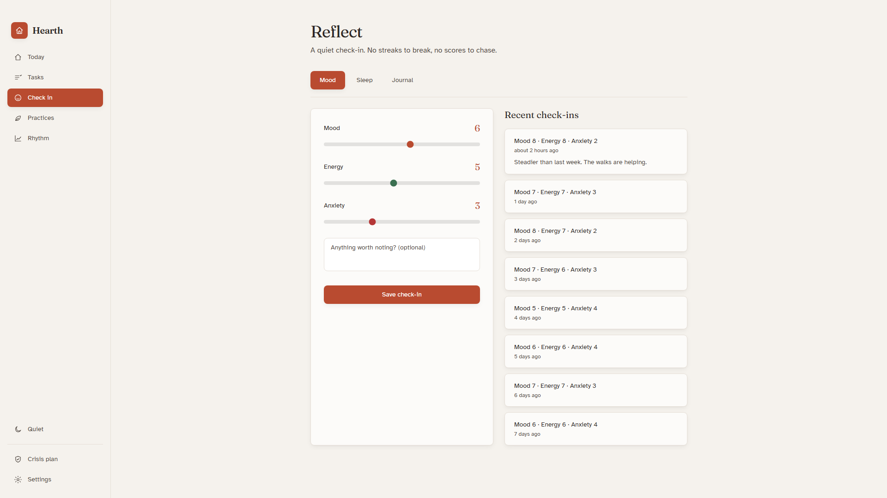

Hearth is a privacy-first energy planner for ADHD and other
variable-capacity days. It helps you decide what fits before a tired
day becomes an impossible list.
Local and encrypted at rest. SQLite runs in memory while open.
No performance theater. No streaks, ads, or public scores.
The actual release candidate
A calm surface for days that are not.
These are hash-recorded frames from the exact 1.1.0 candidate in
the Store draft. Every name and entry is fictional demonstration
data; no customer record appears here.

01 / Today
See the boundary before choosing the work.
The day begins with energy left, a restrained briefing, and a
short list whose recorded costs fit. No streak, leaderboard, or
automatic capacity judgment competes for attention.

02 / Rhythm
Patterns without turning a person into a score.
Review 7, 14, or 30 days of local check-ins. A session summary is
created only when requested and saved as a plainly disclosed
plaintext PDF.

03 / Check in
Reflection stays optional and local.
Record only what is useful. Hearth does not send entries to an
account, cloud API, ad network, remote AI service, or analytics
provider.
The core loop
Three decisions, then less noise.
Hearth does not promise to optimize a person. It makes the cost of a
day visible and keeps the next step small enough to choose.
01
Name today's capacity
Choose a daily budget from 4 to 24. Optional mood, energy, and
sleep check-ins shape a plain-language briefing, but Hearth
never infers or changes the budget from a diagnosis or check-in.
02
Give work a cost
Add priority, expected duration, and energy demand. Hearth
estimates a spoon cost and subtracts completed work from the
day's budget.
03
Choose what still fits
Today can show up to three open tasks whose recorded cost fits
the remaining budget. Smart Decompose can turn one task into
smaller starter steps.
“A realistic plan is not a smaller ambition. It is a kinder contract
with the energy that is actually here.”
Private in the ways we can prove
No account. No cloud API. No record sync.
Hearth stores tasks, check-ins, journal text, and optional wellness
records in an in-memory SQLite database while open. At rest, it
writes versioned, authenticated AES-256-GCM snapshots with a fresh
random IV. A random 256-bit key is protected by Windows DPAPI through
Electron safeStorage. A temporary encrypted migration backup for
older installs is retired after two verified encrypted generations.
Hearth has no advertising, remote AI service, or app telemetry.
Energy planning leads. Check-ins, rhythm, practices, and the crisis
plan remain optional local support, not a bundle of medical
promises.
Reflect
Mood, energy, anxiety, sleep, and typed journal entries.
Rhythm
Local 7, 14, and 30 day trends with a requested PDF summary.
Practices
Breathing, grounding, body scan, and a protected focus block.
Preserved modules
ERP notes, diary cards, and medication references remain outside
default navigation pending dedicated opt-in and safety review.
Built in public, released carefully
The source is open. The paid package is convenience.
Hearth's source remains MIT licensed. The proposed one-time Store
price would cover an official x64 package and Microsoft Store
delivery—not exclusive code, clinical capability, or guaranteed
future features.
No. The exact 1.1.0 x64 package, proposed price, listing copy, and
five screenshots are saved in a Partner Center draft under a
manual publication hold. An owner-completed IARC attestation,
seller payout readiness, Microsoft certification, and a manual
accessibility review of the Store-signed build remain release
gates.
Does Hearth diagnose or treat ADHD?
No. Hearth is personal organization and reflection software. It
does not diagnose, treat, monitor, or replace professional care.
Why pay when the source is public?
The proposed Store purchase covers official packaging and Store
delivery. The source remains available under the MIT license.
Does it send medication reminders?
No. Medication names, doses, and usual times can be kept as local
references, but Hearth does not issue medication reminders.
What happens in a crisis?
Hearth can display a user-written crisis plan and US 988 links,
but it does not monitor a person or guarantee detection. In a US
crisis, call or text 988; in immediate danger, call the local
emergency number.